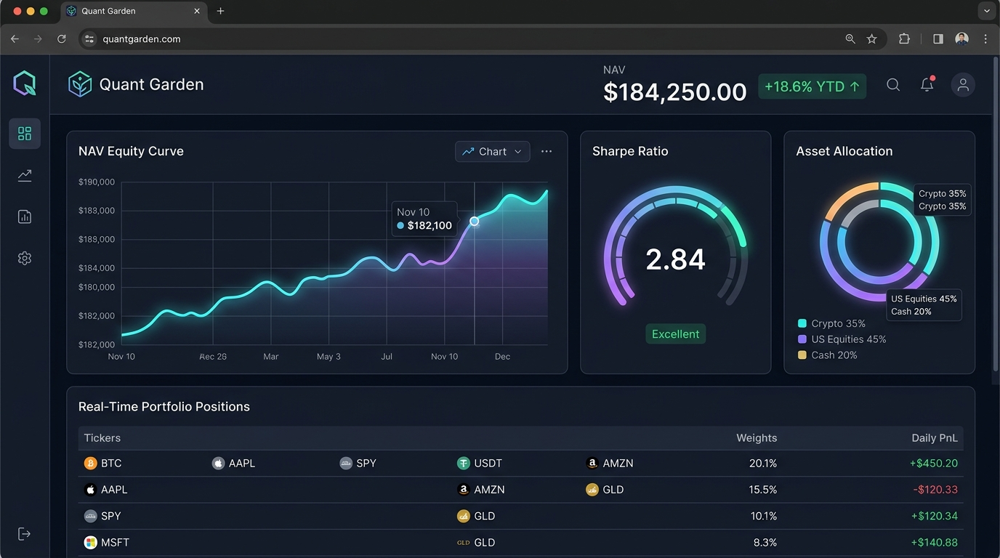
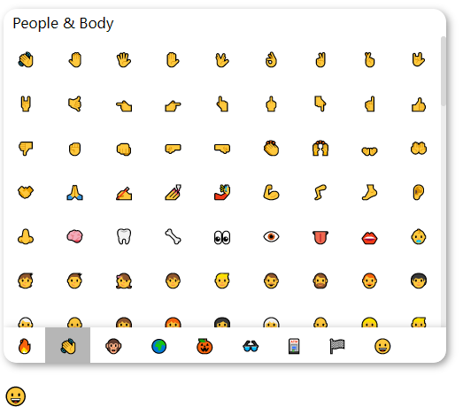
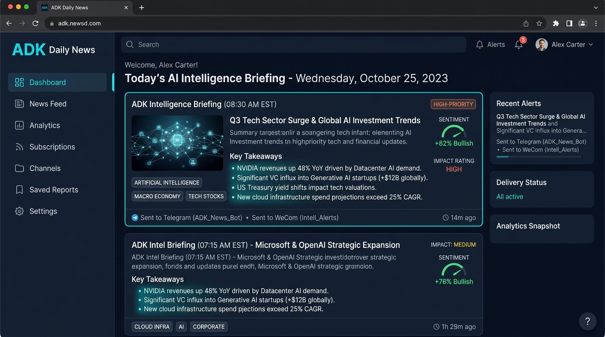
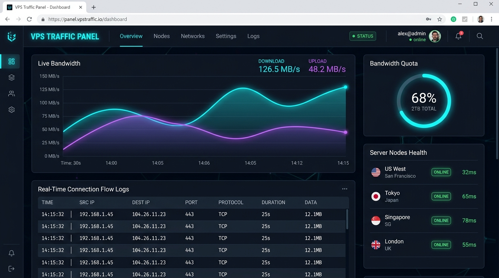

ADK lab
ADK lab —— 探索发现更多有趣 | Develop By ADK
ADK Quant
资产持仓与量化监控服务
基于 Python 异步架构打造的个人量化资产与实时持仓监控平台。集中纳管多账户资产净值、策略盈亏跟踪、自动化风控告警与实时可视化图表。接入 Authelia 零信任网关，实现金融级安全防护。


Vue3-Emoji
轻量级高复用表情选择器组件
基于 Vue 3 + Vite 构建的现代化表情选择器组件。数据源基于原生 emoji-data，开箱即用，支持多肤色自由切换、拼音及英文模糊搜索、自定义插槽与极佳的键盘无障碍交互，深受开源社区青睐。
ADK Daily News
每日 AI 资讯早报与工作流中枢
基于 LLM 与自动化 Webhook 的每日资讯智能聚合平台。自动化抓取全球财经、前沿科技与行业趋势，通过多阶段链式提示词提取核心洞察，并通过 Telegram、微信与邮件等多渠道自动化分发。


Traffic & SSO
流量监控与零信任安全网关
构建高可用的生产级云端基座。深度结合 Xray 内核与 Python 流量探测引擎，毫秒级感知 VPS 带宽吞吐；搭载 Authelia 零信任 SSO 网关与 Nginx Forward-Auth，为全栈微服务铸造坚实的安全防线。
关于我 / About Me

ADK
CreatorFullstack Engineer · OSS Enthusiast · Cloud Native
热爱极致的前端工程、低延迟后端架构与美学交互设计。坚信工具应当如流水般自然、如冰川般澄澈，以代码驱动灵感，构建兼具极客性能与美感的数字化体验。